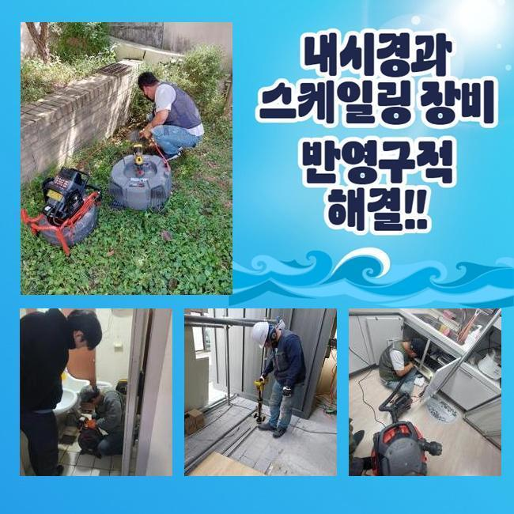
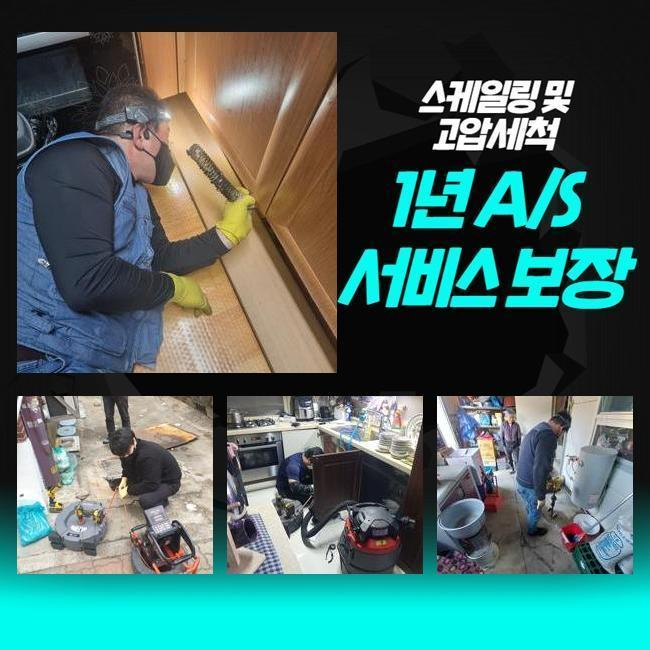
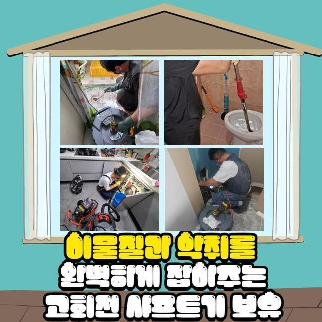
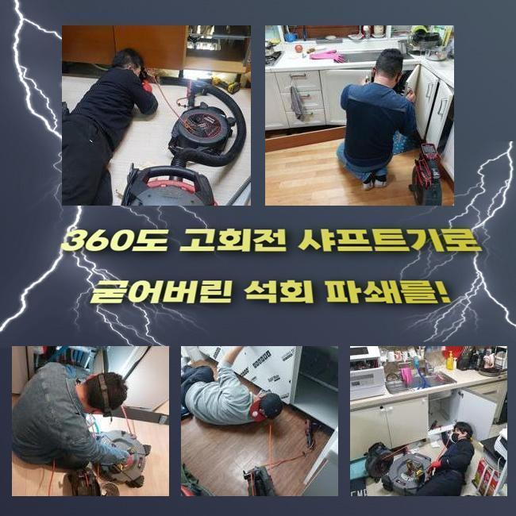
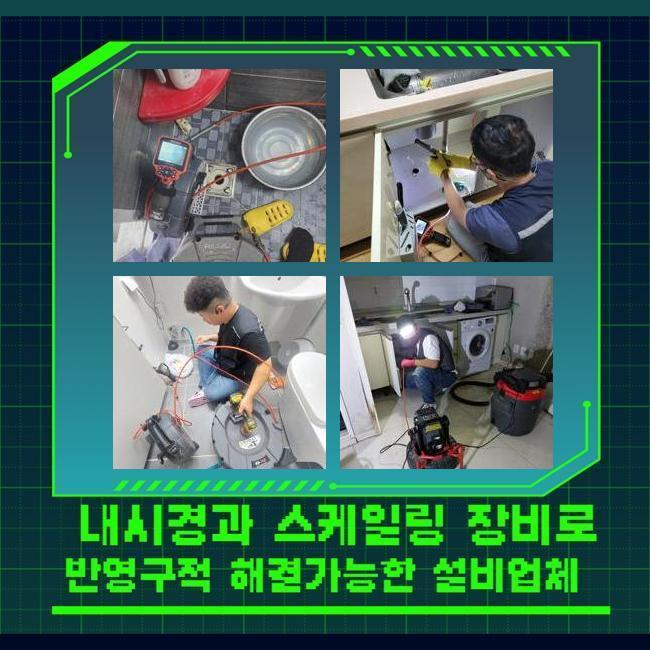
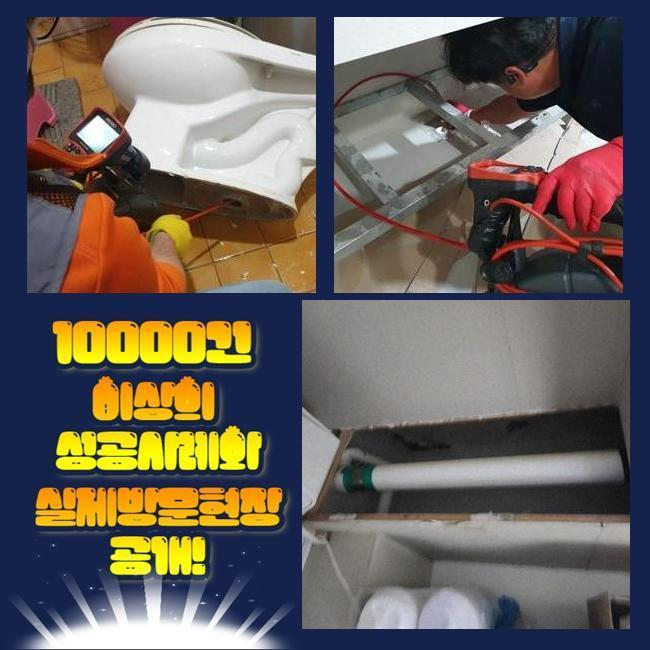

🏠 노원구 공릉동변기배관막힘 상계동 하수구뚫는곳 물샘전문업체
용인 싱크대막힘 전문 시공 후기

📋 작업 개요
- 위치: 용인
- 서비스 유형: 싱크대막힘, 변기막힘, 하수구막힘, 배관막힘, 맨홀막힘, 누수수리, 뚫는업체, 배관청소, 고압세척
- 작업 일시: 2025. 4. 28. 12:49
- 업체명: 하수구수사대 (010-5615-2118)
🔍 문제 상황
노원구 공릉동변기배관막힘 상계동 하수구뚫는곳 물샘전문업체
주방에서 조리공간이 막히게되면 설거지등에 애로사항을 감당해야됩니다
식당에서 해당 증상들이 생기게되면 영업자체에 악영향력들을 미쳐요
그러므로 전문성을 갖춘 상태에서 해결해주는것이 필요한데요
요식업소에서 배수관에서 통수오류가 나타나게 되었어요
주변의 식당에까지 비슷한 문제들이 보여졌어요
이런 증상은 메인관로에 까닭이 생겨났을 확률들이 있는데요
때문에 공유관로를 이용하는 맨홀쪽의 진단도 진행되어야했던 현장으로 판단되었습니다
도착한 후 먼저 주방 씽크대부분이 막혀버린것을 확인했는데요

🔎 원인 분석
💡 전문가 진단: 정밀 진단 장비를 사용하여 슬러지의 고착 여부를 판명하고 타격/세척 작업을 실시했습니다.
그로 인하여 통수가 불가한 상태였고 적절한 조치들이 필요했죠
배수관의 결함현상은 수많은 원인들로 등장하는데 이 중 대표적인 이유는 배수관이 오래되거나 이물들이 쌓여서그런건데요
이같은 문제의 경우 위생 관련한 사항에도 직관적인 영향력들을 끼치기에 이것을 막고자 해결책들을 꾀하게 되었습니다
내시경기기를 배수관으로 넣어주면서 구석구석 주시하니 여기저기에 잔해물들이 축적된 걸 관찰했어요
내시경기기는 협소한 배수관을 확인하는 장비들로 렌즈가 있는 케이블을 배수관으로 투입시켜 그때그때 육안으로 관찰하게해주는 기기에요
진단 결과 오수들이 배출이 안되고 고여버린 모습이였죠
배수관이 낡았다거나 구조에서 비롯된 증세가 아니라 배수 과정에서 빠져나가던 식자재의 잔해가 쌓이게되어 통수자체를 불가하게 만든것이 원인이였죠
싱크대를 포함해 트렌치와 외부라인이 이어진 구조라 주방에서 생겨난 증세들이 외측까지 영향력을 미친 현상이였는데요
원인들을 파악해보고 즉시 하수관을 조치해보고자 청소를 이행했는데요
해당 작업에서 운용했던 장비의 경우 플렉스 샤프트라는 기기로서 이 기기는 관로에서 돌며 오염물질들을 제거하는 고마운 기기에요

🔧 작업 과정
노커체인을 활용한다면 주방라인이 막혀버렸을때 오염물질들을 제거하고 그리고 표면을 보호하면서 수월하게 작업해줄 수 있어요
샤프트기계를 투입시켜 이물질이 쌓인 곳에 도달하여 체인으로 오염물질들을 없애주었어요
잔해물들이 샤프트기기에 엉켜서 빠져나왔죠
배출된 찌꺼기를 확인했더니 예상한 바와 같이 밖에서부터 침투된 음식물들과 기름들이 대다수였습니다
여러 사례를 보건대 음식물의 잔해가 상당수였는데 가열된 제거된 뿌리의 모습들로 씽크볼에서 빠지면서 정체를 일으키는 까닭이 된것입니다
이러한 잔해들은 수월히 빠지지 못하여 내측에서 위치하게되어 통수과정을 방해합니다
음식물들과 기름성분들도 어마어마하게 배출됐는데 조리공간에서 쓰는 기름성분들이 배수관으로 흐르면서 벽쪽에서 고착된것이죠
기름물질들은 길목에서 점진적으로 굳게되며 벽라인에 흡착하여 다른 음식물들과 혼합되어 전 구간에 걸쳐 문제들을 양산시키게되요
오일들은 지속해서 단단해져서 간단한 방식으로 해결할 수 없는 경우들이 다수입니다
샤프트기기를 사용해 청소를 실시하고 석션장치를 준비시켜 떨어져나간 부유물을 배출시켜 빈틈없이 정리해주었어요
딱딱해진 기름뭉치와 벽에 흡착되었던 오염원도 폐기시키고 작업대상 관로를 내시경케이블을 통해 체크하며 오염도를 확인했는데요
막히는 현상은 시정되었으며 밖의 배관의 솟아오르는 증세도 이상없이 사그라들었습니다
저희의 전문가들은 고객께 주방의 하수관 주의사항과 관련된 유익한 사항들까지 안내했는데요
사용을 하실 때 씽크대에 잔해들을 여과없이 배출시키지 않는게 선행되어야 한다고 안내했는데요
더 나아가 강도가 강한 식재료나 기름의경우 하수구 막힘의 원인들이 될 가능성이 높아 필수적으로 잔여물질들을 개수대로 버리기에 앞서 별도 처리하시는게 좋다고 고지해드렸습니다
기름성분은 점성이 높고 내측에서 딱 달라붙게되므로 사용한 기름들은 키친타올로 닦고서 세척해주시는것이 권장하고 있는 방식이에요


✅ 작업 완료
예상에 없던 증상들을 예방하려면 정기적으로 하수관들을 세정해주고 상황별로 배수관 제품들을 이용해보는것이 좋다고 설명했어요
고객분은 저희의 설명을 듣고서 신경써서 관리부분을 꼼꼼히 해보겠다 말씀하셨죠
하수구 문제들은 조금이라도 소홀히하면 처음과다르게 수렁으로 빠지게 되어 미리 서둘러 수습하는게 제일 좋습니다
끝내 의뢰자의 애로사항들을 바로 잡아 안심할 수 있었고 예상치못한 트러블들을 막아내기 위한 올바른 관리들과 동반해야할 것을 마지막으로 강조합니다!



⚠️ 베란다 누수 및 방수 관리 방법
- ✅ 비가 많이 올 때 창틀 주변이나 아래층 천장에 얼룩이 생기는지 정기적으로 확인해 보세요.
- ✅ 우수관 주변 실리콘 마감이 들뜨거나 깨진 틈새가 있는지 손상 여부를 수시로 체크하세요.
- ✅ 베란다 바닥 타일의 줄눈(메지)이 소실되면 그 틈으로 물이 침투하여 누수가 유발됩니다.
- ✅ 누수 의심 증상 발견 시 방치하면 아래층 손실이 커지므로 즉시 전문가의 진단을 받으십시오.
💡 핵심 정리
- 확실한 장비 작업(내시경 점검 및 샤프트 스케일링)으로 원인을 뿌리 뽑습니다.
- 작업 후 1년 이내에 동일한 부위 재발 시 100% 무상 A/S 서비스를 보장합니다.
- 서울 · 경기 · 인천 전 지역에 24시간 언제든 긴급 출동할 수 있도록 항시 대기 중입니다.
❓ 자주 묻는 질문 (FAQ)
🚨 용인 싱크대막힘 문제로 고민이신가요?
정확한 원인 진단과 확실한 시공으로 재발 없는 해결을 약속드립니다.
24시간 긴급 출동 | 서울 · 경기 · 인천 전지역 | 1년 내 재발 시 무상 A/S